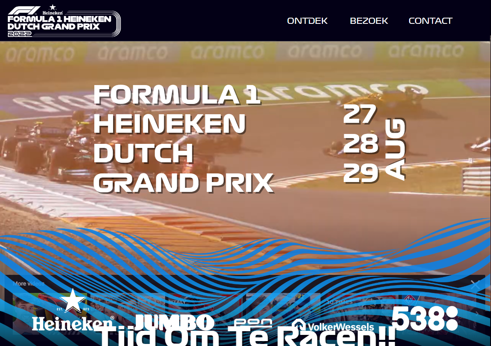
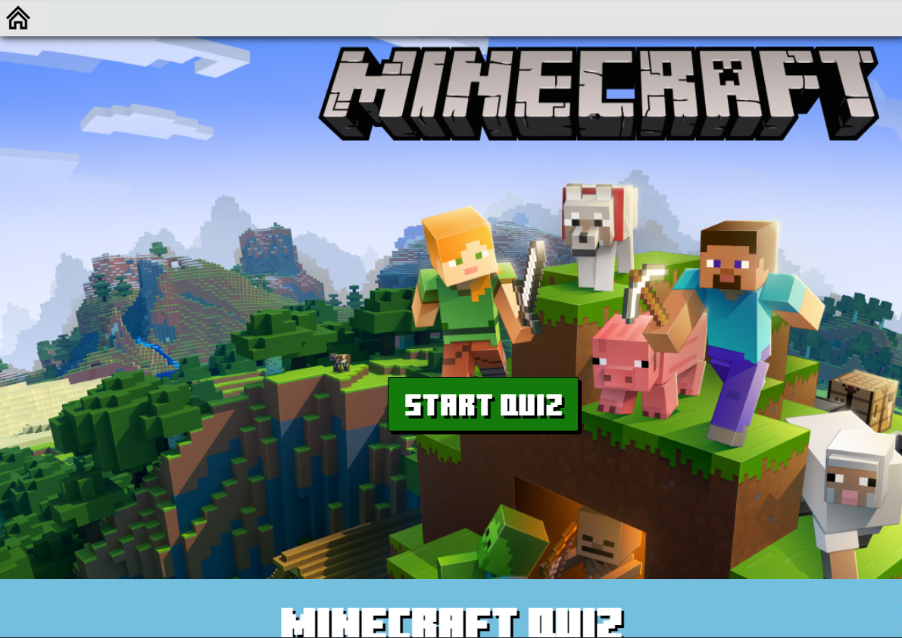
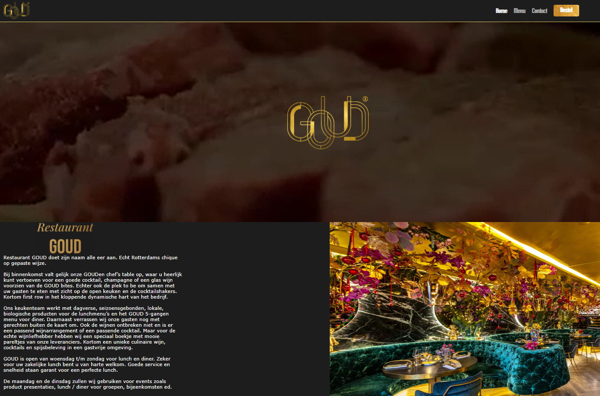

Build your zoo was het eerste groeps project van leerjaar 1 op het GLR.
De opdracht was om de website van een dierentuin te upgraden.
Klik afbeelding voor meer info

Project #2
Formule1
De site voor de formule 1 was mijn eerste grote solo project.
Mijn doel was om de GP zandvoort website zo goed mogelijk na te maken.
Klik afbeelding voor meer info

Project #3
Quiz
De quiz groepsopdracht vond ik zelf een hele leuke omdat ik hier vooral ben gaan expirimenteren.
Zo heb ik bijvoorbeeld de basis van het animeren geleerd en het parallax effect.
Klik afbeelding voor meer info

Project #4
Goud
Goud was weer een groepsopdracht. Een van de minder leuke projecten vanwege een team zonder motivatie.
Ondanks alles is het eindresultaat toch best goed gelukt.
.jpeg) Contact
About
Projecten
Home
Contact
About
Projecten
Home